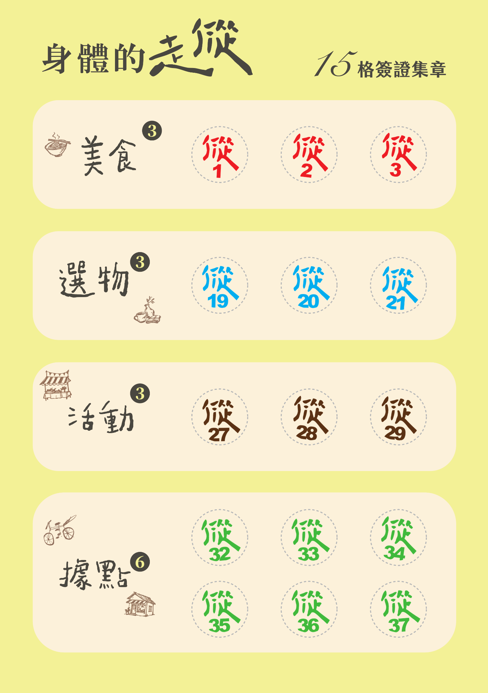
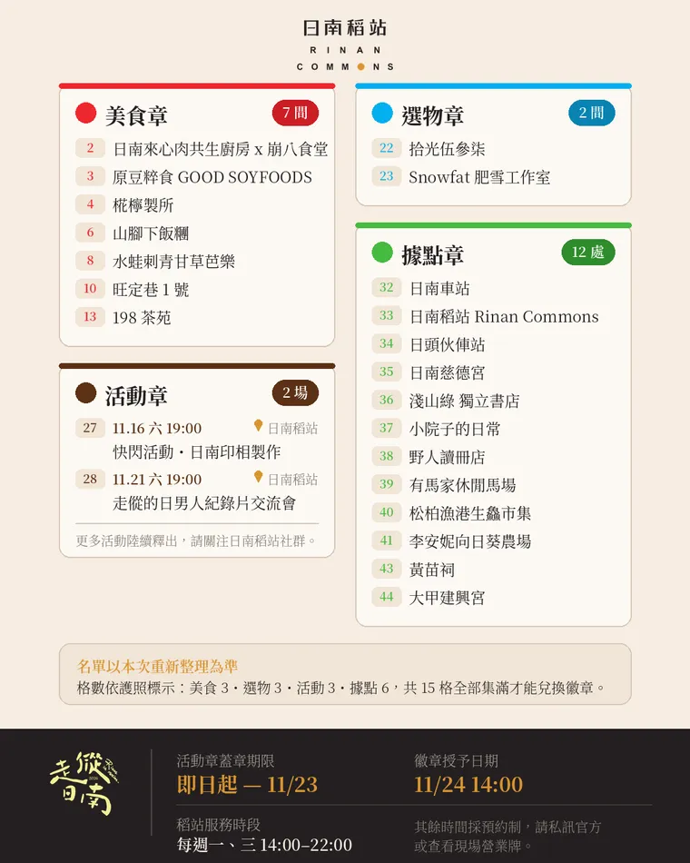
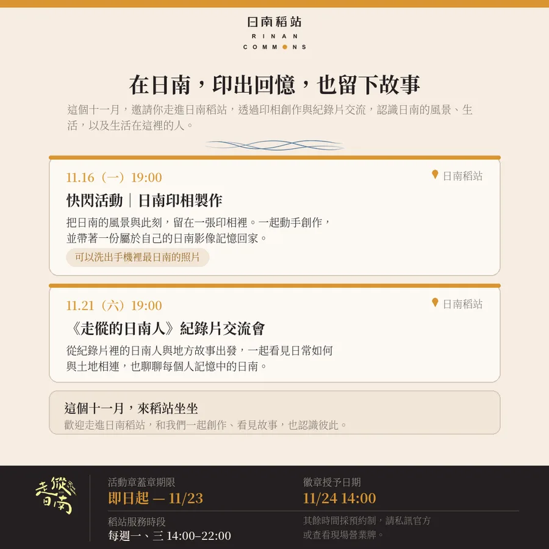
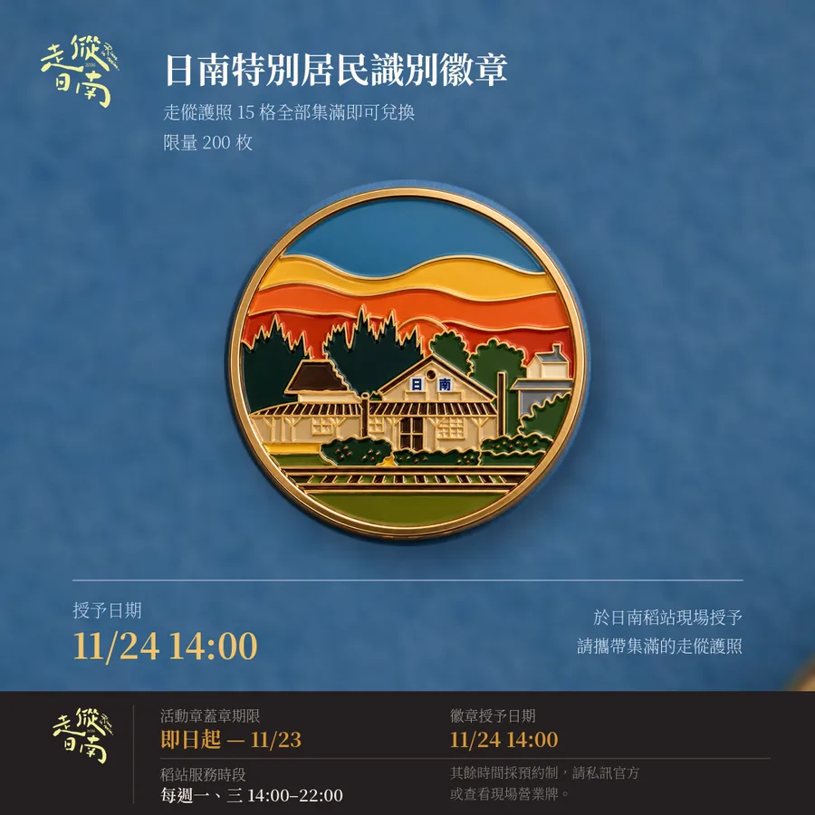

RINAN COMMONS
在往返之間，
認識日南。
拿著護照走進店家、活動與地方據點。每一枚章，都是一次和日南相遇的方式。
姓名Name
來自From
造訪日期Date
「我最喜歡日南的……」
留一點空白，給這次走傱的記憶。
走傱護照・線上版
查找集章處RINAN COMMONS
拿著護照走進店家、活動與地方據點。每一枚章，都是一次和日南相遇的方式。
姓名Name
來自From
造訪日期Date
「我最喜歡日南的……」
留一點空白，給這次走傱的記憶。

店家集章・共 3 格
美食章・合作店家續
先看營業資訊，再出發。
店家集章・共 3 格

紙本護照合作索引・本次線上版已依最新名單更新。
僅認列正式公告活動・共 3 格

活動當日拍照 → 期限內攜帶護照與照片到稻站 → 工作人員核對後補蓋。照片不留存、不公開。
查看完整照片說明 ↗RINAN SPECIAL RESIDENT BADGE
四類印章共 15 格全部集滿，帶著走傱護照回到日南稻站，換一枚屬於這段往返的識別徽章。

KEEP THIS PAGE
保留原印章，不要自行塗改或撕除。攜帶護照至日南稻站，由工作人員核對後，再依規定於延伸區補章。
只有經日南稻站團隊審核並正式公告認可的地方活動，才能集活動章。參與後保留現場照片，並於公告期限內攜帶護照與照片至稻站核對補章。
不會。已完成的印章與集章進度都會保留，不因規則更新而作廢。
依各合作店家現場說明辦理。出發前建議先確認營業時間、指定品項與當日集章方式。
稻站服務時段每週一、三 14:00–22:00
其他時間採預約制，請私訊官方或查看現場營業牌。
可協助事項規則詢問、錯格核對、活動補章與徽章兌換。
在往返之間，認識日南。